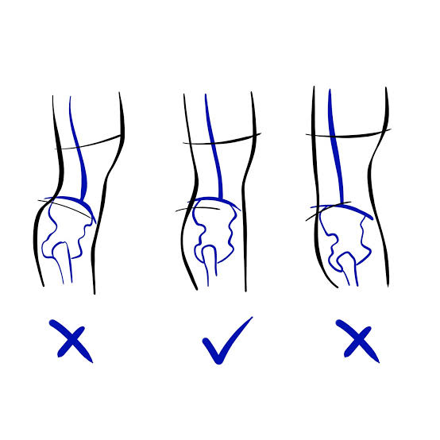
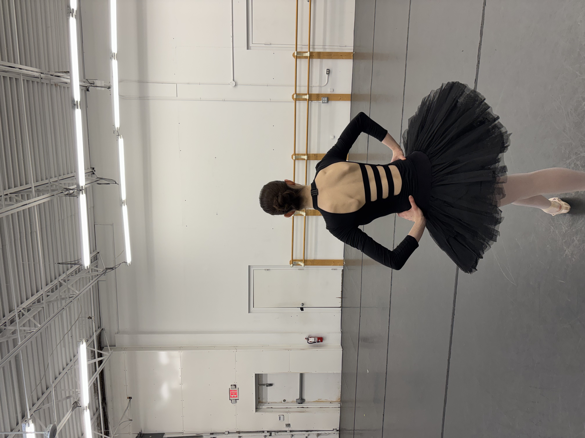

Rileighs Ballet Agenda


A high passe is also crucial to being able to sustain a piroutte position. When combined with the above correction regarding dropping the pelvis, one is able to create a stable position that can act as an axis for you to turn on. When you drop your passe and it isn't help high, it lowers your center of gravity making it harder to turn. Keep this in mine along with the correction to push the knee back in your preparation to build a solid foundation for pirouettes.

I have a bad habit of this, but never forget your artistry. When you dance with confident it helps to not only apply corrections but look like actual dancing. Ballet gets very technical but that doesn't mean you should get lost in the corrections and technique to the point where you look like you're thinking rather than dancing.
